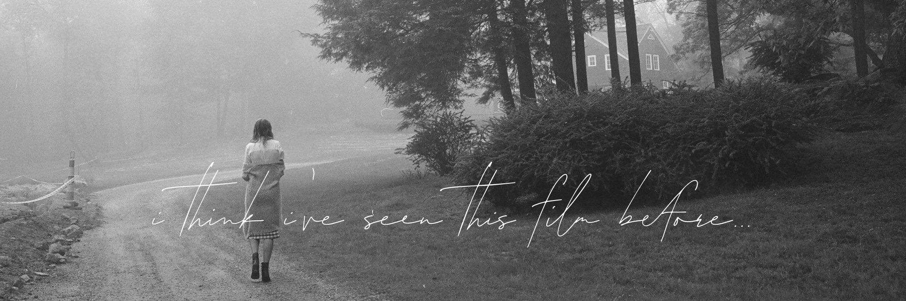
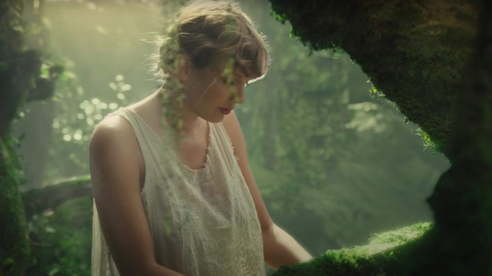

Stream Taylor Swift's fourth studio album on Spotify : folklore

Watch Taylor Swift's movie clip for her single "cardigan"
Watch Taylor Swift's live performance of "betty"
Watch Taylor Swift's live performance of "exile"
Watch Taylor Swift's original version of "the lakes" produced by Jack Anthonoff
Click here to come back to home !